Modul 5: Arsitektur Navigasi (Named Routes & Bottom Navigation Bar)
Navigasi merupakan bagian penting dalam pengembangan aplikasi mobile karena membantu pengguna berpindah dari satu halaman ke halaman lain secara teratur. Pada Modul Praktikum V, pembahasan berfokus pada penggunaan Named Routes dan BottomNavigationBar di Flutter. Named Routes digunakan untuk mengatur rute halaman melalui konfigurasi terpusat pada MaterialApp, sedangkan Bottom Navigation Bar menyediakan menu di bagian bawah layar untuk mengakses halaman utama seperti Dashboard, Riwayat, dan Profil.
Pada pengembangan project Expense Tracker, konsep tersebut diterapkan dan dikembangkan lebih lanjut bersama fitur login, register, serta penyimpanan data transaksi menggunakan database lokal. Dengan demikian, aplikasi tidak hanya menampilkan perpindahan halaman, tetapi juga dapat menyesuaikan informasi berdasarkan pengguna yang sedang masuk dan menyimpan transaksi yang dimasukkan.
Langkah praktikum mengikuti urutan pada Modul V, yaitu mengatur rute di file main.dart, membuat wadah tab pada main_screen.dart, lalu menyesuaikan Dashboard agar terhubung dengan alur navigasi. Kode yang ditampilkan pada bagian ini berasal dari project Expense Tracker yang telah dikembangkan.
main.dart
File main.dart merupakan titik masuk aplikasi Flutter. Pada project ini, MaterialApp menggunakan initialRoute: '/login' sehingga halaman login ditampilkan pertama kali. Rute /login dan /register didaftarkan pada properti routes. Halaman utama dan form transaksi tidak didaftarkan sebagai rute statis karena keduanya membutuhkan data userEmail yang diteruskan secara dinamis setelah pengguna berhasil login.
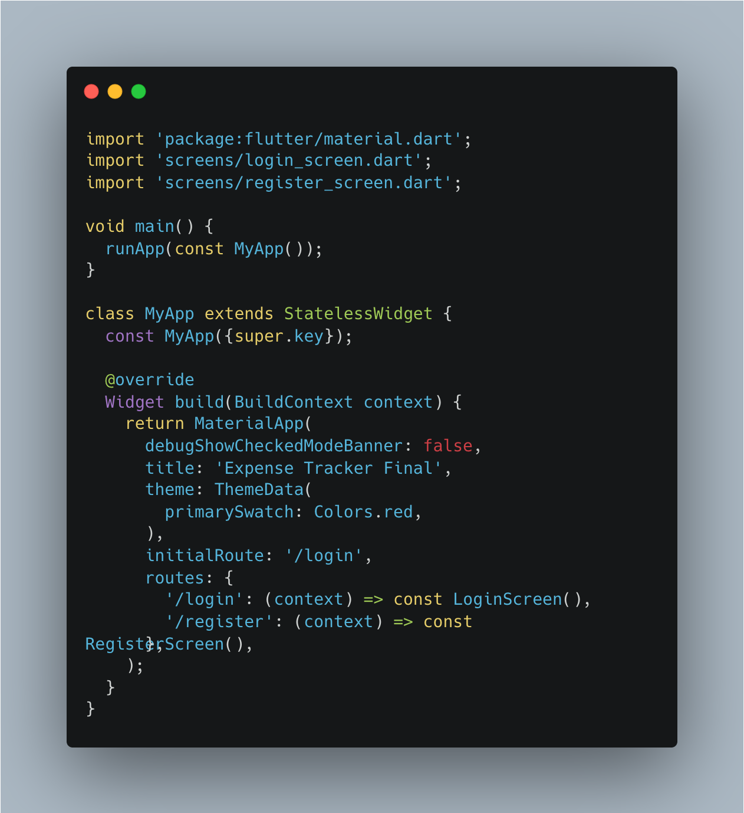
Kode 1. Konfigurasi MaterialApp dan Named Routes pada main.dart
main_screen.dart
File main_screen.dart menjadi wadah untuk tiga halaman utama aplikasi, yaitu Dashboard, Riwayat, dan Profil. Kelas MainScreen menggunakan StatefulWidget karena indeks tab aktif dapat berubah saat pengguna memilih menu. Variabel _selectedIndex menyimpan tab yang sedang dipilih, sedangkan daftar _pages berisi widget halaman yang menerima userEmail. Ketika salah satu item BottomNavigationBar ditekan, fungsi _onItemTapped memperbarui indeks melalui setState, sehingga isi halaman ikut berubah.
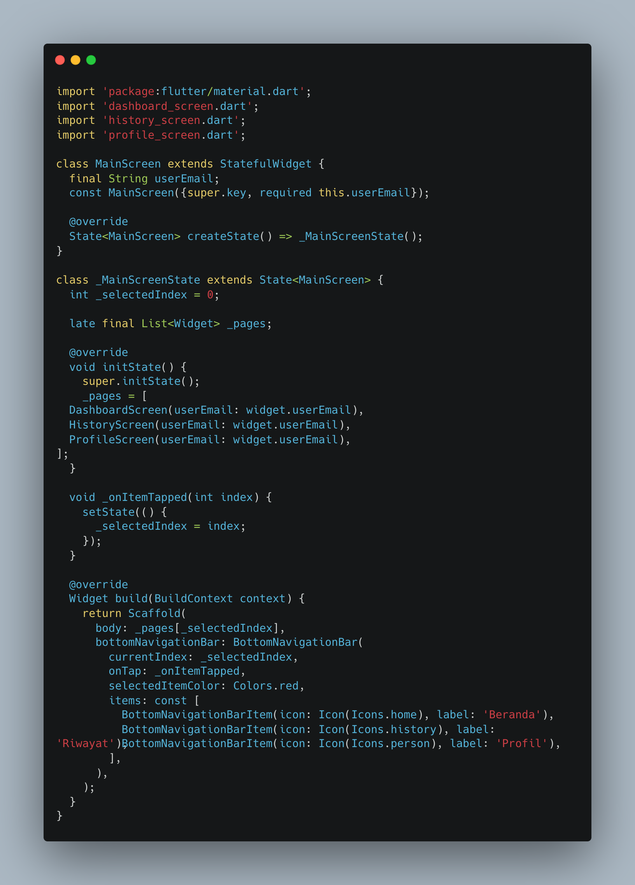
Kode 2. Pengaturan Tab Dashboard, Riwayat, dan Profil
dashboard_screen.dart
Selain langkah inti pada modul, Dashboard pada project akhir dikembangkan agar mengambil saldo dan daftar transaksi dari database lokal berdasarkan email pengguna. Data saldo ditampilkan sebagai ringkasan keuangan, sedangkan daftar transaksi menampilkan catatan terbaru. Tombol tambah transaksi membuka AddTransactionScreen sambil meneruskan email pengguna. Setelah form mengembalikan hasil berhasil, Dashboard memuat ulang data agar perubahan langsung terlihat tanpa pengguna harus membuka ulang aplikasi.
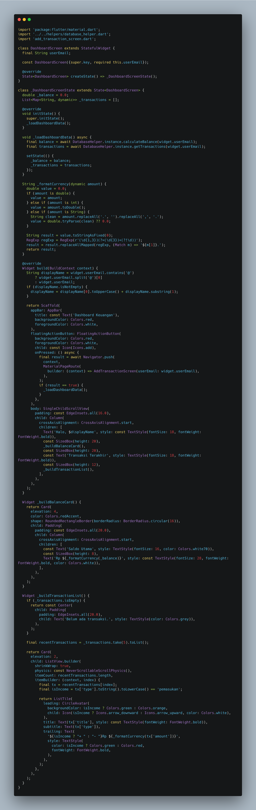
Kode 3. Tambahan pengambilan data, ringkasan saldo, dan navigasi ke form transaksi
Pada Modul V, tugas individu yang diberikan adalah membuat halaman riwayat transaksi, membuat halaman profil yang berisi avatar, nama, email, dan tombol logout, serta membuat halaman login dengan kolom email dan password. Saat tombol login ditekan, aplikasi diarahkan ke halaman utama dan menampilkan informasi pengguna. Pada project ini, bagian tersebut dikembangkan dengan mengambil data transaksi berdasarkan email dan menambahkan alur autentikasi lokal.
login_screen.dart
File login_screen.dart menyediakan form untuk memasukkan email dan password. Data yang diisi diperiksa melalui fungsi login pada database helper. Jika kredensial cocok, pengguna diarahkan ke MainScreen dengan membawa email akun agar Dashboard, Riwayat, dan Profil dapat menampilkan data milik pengguna tersebut.
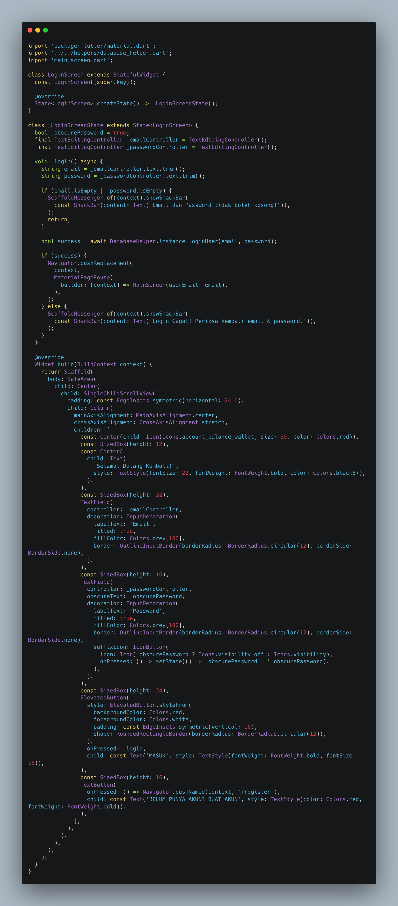
Kode 4. Form login dan alur menuju halaman utama
history_screen.dart
File history_screen.dart menampilkan daftar transaksi yang tersimpan untuk akun yang sedang digunakan. Data diambil melalui DatabaseHelper dengan parameter email pengguna. Halaman ini melengkapi menu Riwayat pada BottomNavigationBar sehingga pengguna dapat melihat catatan transaksi di luar ringkasan transaksi terbaru yang ditampilkan pada Dashboard.
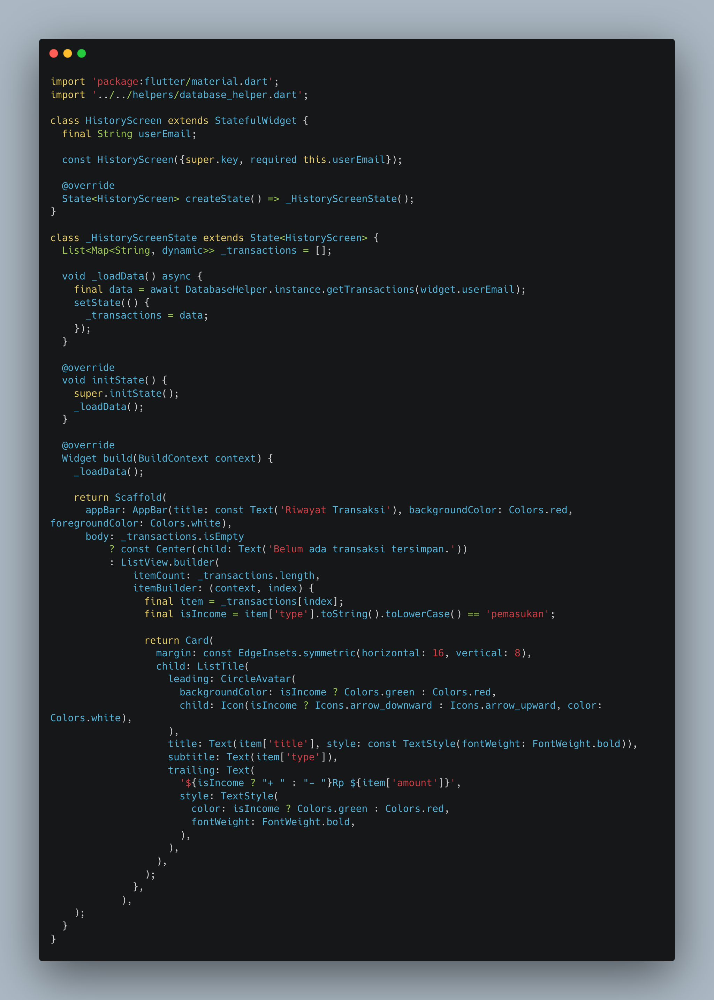
Kode 5. Pengambilan dan penampilan daftar riwayat transaksi
profile_screen.dart
File profile_screen.dart menampilkan informasi akun pengguna, termasuk email, serta menyediakan tombol logout. Ketika logout dipilih, pengguna keluar dari halaman utama dan kembali ke alur login. Halaman ini dihubungkan sebagai tab ketiga pada MainScreen.
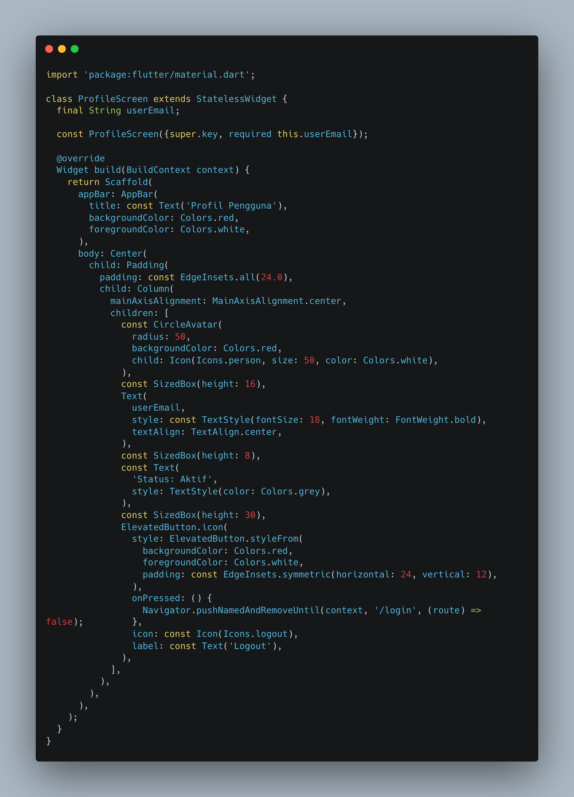
Kode 6. Tampilan profil dan tombol logout
Project akhir menggabungkan hasil praktikum Modul 1 sampai Modul 5 menjadi satu aplikasi. Instruksi project meminta agar bagian yang sebelumnya hanya berupa UI, navigasi, atau data statis dilengkapi dengan penyimpanan lokal, serta ditambahkan form login dan register. Pada Expense Tracker, data akun dan transaksi disimpan menggunakan SQLite melalui package sqflite, sementara perpindahan halaman menghubungkan form autentikasi dengan menu utama.
register_screen.dart
File register_screen.dart menyediakan form pendaftaran akun baru. Informasi yang dimasukkan diteruskan ke fungsi registrasi pada DatabaseHelper untuk disimpan secara lokal. Halaman ini diakses melalui rute /register yang sudah didaftarkan pada main.dart, sehingga pengguna baru dapat membuat akun sebelum login.
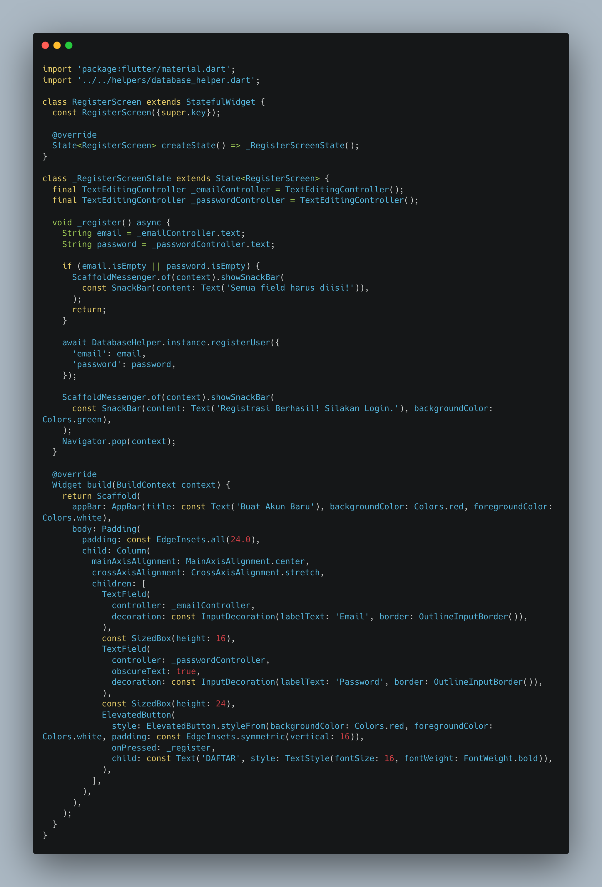
Kode 7. Form pendaftaran akun pengguna
add_transaction_screen.dart
File add_transaction_screen.dart digunakan untuk memasukkan transaksi baru. Form menyediakan isian judul, nominal, dan jenis transaksi, disertai validasi agar data yang diperlukan tidak kosong atau tidak valid. Setelah data disimpan melalui DatabaseHelper, halaman mengembalikan hasil ke Dashboard agar ringkasan saldo dan daftar transaksi dapat diperbarui.
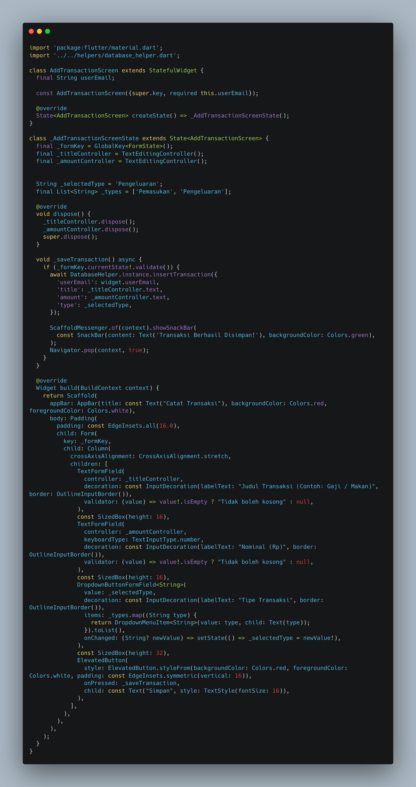
Kode 8. Form input dan penyimpanan transaksi
transaction_detail_screen.dart
File transaction_detail_screen.dart disiapkan sebagai halaman untuk menampilkan rincian transaksi tertentu. Namun, pada versi project yang didokumentasikan, halaman ini belum terhubung ke alur navigasi utama dari daftar transaksi. Karena itu, file ini dicantumkan sebagai bagian kode project, bukan sebagai fitur yang sudah terintegrasi penuh pada alur penggunaan aplikasi.
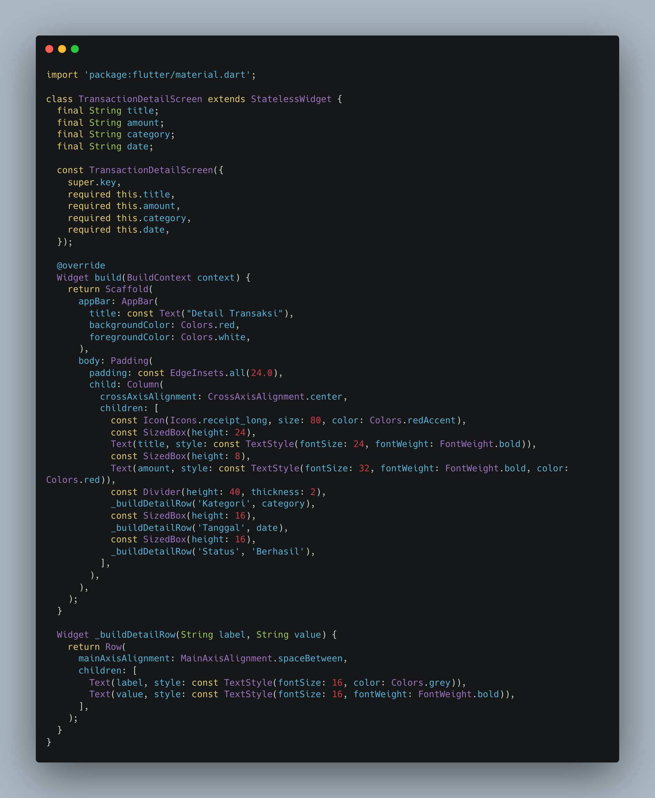
Kode 9. File halaman detail transaksi
database_helper.dart
File database_helper.dart menjadi penghubung antara aplikasi dan database SQLite. File ini mengatur pembuatan database serta tabel pengguna dan transaksi, proses registrasi dan login, penambahan transaksi, pengambilan riwayat, dan perhitungan saldo. Dengan penyimpanan lokal ini, data yang dimasukkan tidak hanya berada pada tampilan sementara, tetapi disimpan di perangkat untuk digunakan kembali oleh halaman aplikasi.
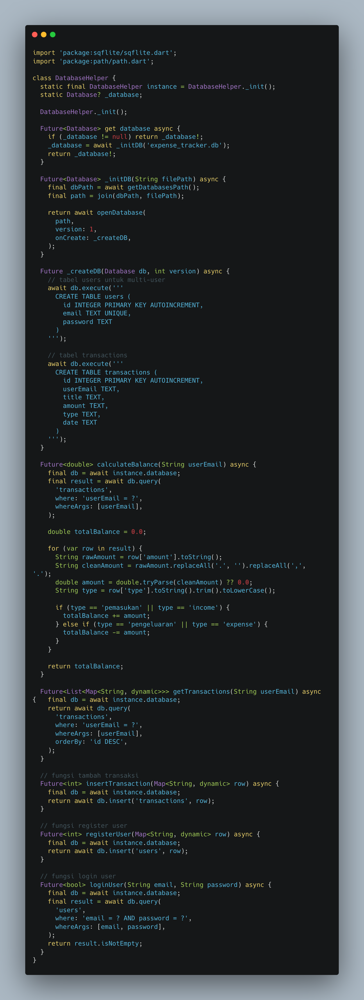
Kode 10. Operasi database lokal untuk akun dan transaksi
pubspec.yaml
File pubspec.yaml mengatur informasi package dan dependency yang digunakan project. Pada aplikasi ini, dependency utama yang berkaitan dengan penyimpanan data adalah sqflite dan path, sedangkan cupertino_icons menyediakan ikon. File ini juga menyatakan versi SDK Dart yang didukung serta konfigurasi penggunaan Material Design.
Berikut disediakan enam tempat untuk menampilkan hasil screenshot aplikasi Expense Tracker. Ganti setiap gambar contoh dengan screenshot aktual dari aplikasi yang telah dijalankan.
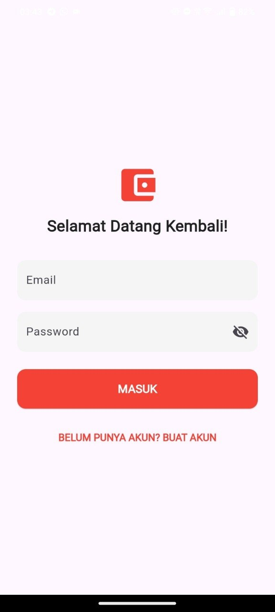
Gambar 1. Halaman Login
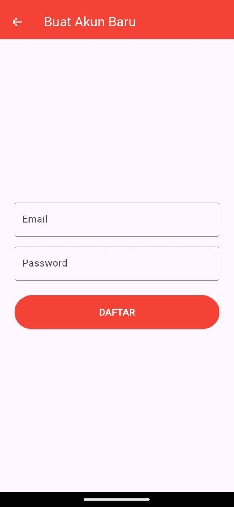
Gambar 2. Halaman Register
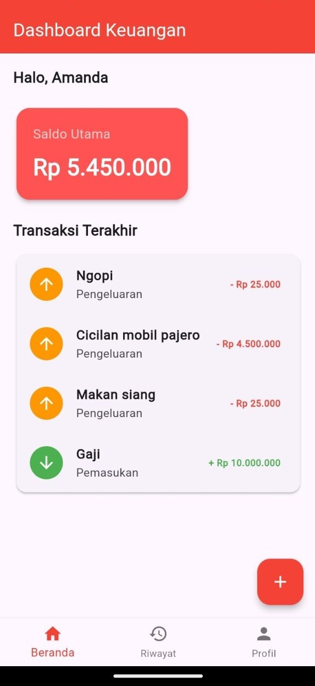
Gambar 3. Halaman Dashboard
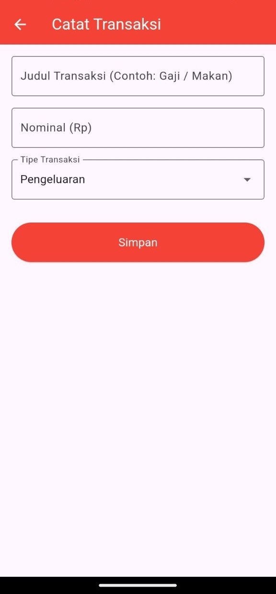
Gambar 4. Form Tambah Transaksi
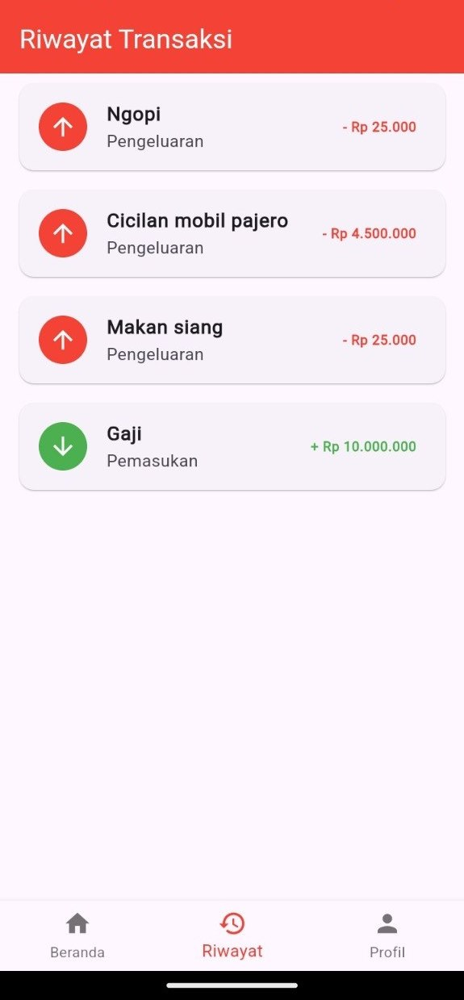
Gambar 5. Halaman Riwayat Transaksi
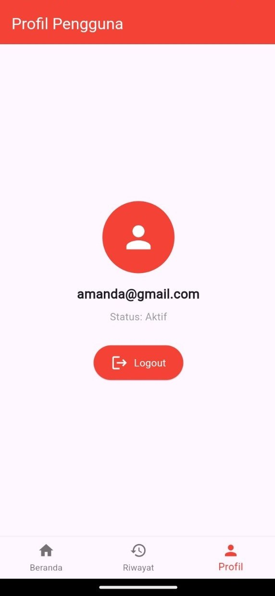
Gambar 6. Halaman Profil
Praktikum Modul V menerapkan Named Routes untuk mengatur navigasi awal aplikasi dan BottomNavigationBar untuk menyatukan akses ke Dashboard, Riwayat, dan Profil. Pada project akhir Expense Tracker, penerapan tersebut dikembangkan dengan alur login dan register, pengiriman email pengguna ke halaman utama, serta penyimpanan akun dan transaksi menggunakan SQLite. Dengan integrasi ini, aplikasi memiliki navigasi yang lebih terstruktur dan dapat menyimpan serta menampilkan data transaksi pengguna secara lokal.